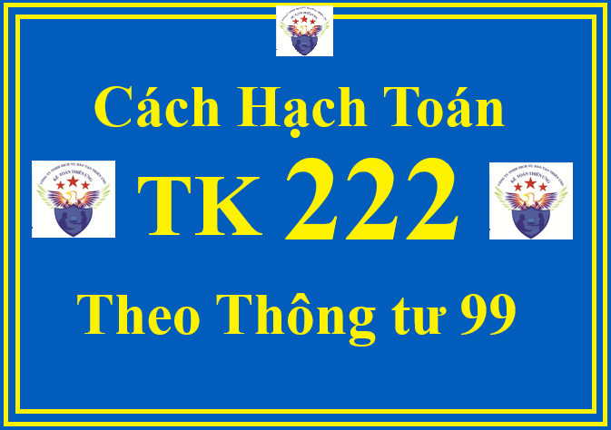

Tài khoản 222 - Đầu tư vào công ty liên doanh, liên kết theo Thông tư 99/2025/TT-BTC: dùng để phản ánh giá trị hiện có và tình hình biến động tăng, giảm toàn bộ khoản đầu tư vào công ty liên doanh và công ty liên kết; tình hình thu hồi vốn đầu tư vào công ty liên doanh, liên kết; các khoản lãi, lỗ phát sinh từ hoạt động đầu tư vào công ty liên doanh, liên kết.
Công ty liên doanh được thành lập bởi các bên góp vốn liên doanh có quyền đồng kiểm soát các chính sách tài chính và hoạt động, là đơn vị có tư cách pháp nhân hạch toán độc lập. Công ty liên doanh phải tổ chức thực hiện công tác kế toán riêng theo quy định của pháp luật hiện hành về kế toán, chịu trách nhiệm kiểm soát tài sản, các khoản nợ phải trả, doanh thu, thu nhập khác và chi phí phát sinh tại đơn vị mình. Mỗi bên góp vốn liên doanh được hường một phần kết quả hoạt động của công ty liên doanh theo thỏa thuận của hợp đồng liên doanh.
Khoản đầu tư được phân loại là đầu tư vào công ty liên kết khi nhà đầu tư nắm giữ trực tiếp hoặc gián tiếp thông qua công ty con từ 20% đến dưới 50% quyền biểu quyết của bên nhận đầu tư mà không có thỏa thuận khác.
Kế toán khoản đầu tư vào công ty liên doanh phải tuân thủ nguyên tắc kế toán các khoản đầu tư vào đơn vị khác quy định tại Thông tư này.
Khi nhà đầu tư không còn quyền đồng kiểm soát đơn vị nhận đầu tư thì phải ghi giảm khoản đầu tư vào công ty liên doanh; khi nhà đầu tư không còn ảnh hưởng đáng kể đến đơn vị nhận đầu tư thì phải ghi giảm khoản đầu tư vào công ty liên kết.
Các khoản chi phí liên quan trực tiếp đến việc đầu tư vào công ty liên doanh, liên kết được ghi nhận vào giá phí khoản đầu tư vào công ty liên doanh, liên kết đó.
Khi thanh lý, nhượng bán, thu hồi vốn góp liên doanh, liên kết, căn cứ vào tỷ lệ khoản đầu tư vào công ty liên doanh, liên kết được thanh lý, nhượng bán hoặc thu hồi để doanh nghiệp ghi giảm giá trị ghi sổ của khoản đầu tư vào công ty liên doanh, liên kết. Phần chênh lệch giữa giá trị hợp lý của tài sản thu được so với phần giá trị ghi sổ khoản đầu tư vào công ty liên doanh, liên kết thanh lý, nhượng bán, thu hồi thì được ghi nhận là doanh thu hoạt động tài chính (nếu lãi) hoặc chi phí tài chính (nếu lỗ).
Doanh nghiệp phải mở sổ kế toán chi tiết theo dõi các khoản vốn đầu tư vào từng công ty liên doanh, liên kết, từng lần đầu tư, từng lần thanh lý, nhượng bán.
1. Kết cấu và nội dung phản ánh của Tài khoản 222 - Đầu tư vào công ty liên doanh, liên kết theo Thông tư 99/2025/TT-BTC
| Bên Nợ: | Bên Có: |
| Giá trị khoản đầu tư vào công ty liên doanh, liên kết tăng. | Giá trị khoản đầu tư vào công ty liên doanh, liên kết giảm. |
|
Số dư bên Nợ: Giá trị khoản đầu tư vào công ty liên doanh, liên kết hiện còn tại thời điểm kết thúc kỳ kế toán.
|
2. Cách định khoản hạch toán TK 222 - Đầu tư vào công ty liên doanh, liên kết theo Thông tư 99/2025/TT-BTC
2.1. Khi góp vốn bằng tiền vào công ty liên doanh, liên kết, căn cứ số tiền đầu tư và các phi phí liên quan trực tiếp đến việc đầu tư vào công ty liên doanh, liên kết, ghi:
Nợ TK 222 - Đầu tư vào công ty liên doanh, liên kết
Có TK 112 - Tiền gửi không kỳ hạn
Đồng thời mở sổ chi tiết để theo dõi từng loại cổ phiếu theo mệnh giá (nếu đầu tư vào công ty liên doanh, liên kết dưới hình thức mua cổ phiếu) hoặc theo dõi giá trị vốn điều lệ tại công ty liên doanh, liên kết (nếu công ty liên doanh, liên kết không phải là công ty cổ phần).
2.2. Trường hợp nhà đầu tư góp vốn vào công ty liên doanh, liên kết bằng tài sản phi tiền tệ:
a) Trường hợp giá trị ghi sổ hoặc giá trị còn lại của tài sản đem đi góp vốn nhỏ hơn giá trị do các bên đánh giá lại, doanh nghiệp phản ánh phần chênh lệch tăng do đánh giá lại tài sản vào thu nhập khác, ghi:
Nợ TK 222 - Đầu tư vào công ty liên doanh, liên kết
Nợ TK 214 - Hao mòn TSCĐ (giá trị hao mòn lũy kế của TCSĐ, BĐSĐT)
Có các TK 211, 213, 217 (nếu góp vốn bằng TSCĐ hoặc BĐSĐT) (nguyên giá TSCĐ, BĐSĐT)
Có các TK 152, 153, 155, 156 (nếu góp vốn bằng hàng tồn kho) (Giá trị ghi sổ của hàng tồn kho)
Có TK 711 - Thu nhập khác (phần chênh lệch đánh giá tăng).
b) Trường hợp giá trị ghi sổ hoặc giá trị còn lại của tài sản đem đi góp vốn lớn hơn giá trị do các bên đánh giá lại, doanh nghiệp phản ánh phần chênh lệch giảm do đánh giá lại tài sản vào chi phí khác, ghi:
Nợ TK 222 - Đầu tư vào công ty liên doanh, liên kết
Nợ TK 214 - Hao mòn TSCĐ (giá trị hao mòn lũy kế của TCSĐ, BĐSĐT)
Nợ TK 811 - Chi phí khác (phần chênh lệch đánh giá giảm)
Có các TK 211, 213, 217 (góp vốn bằng TSCĐ hoặc BĐSĐT) (nguyên giá TSCĐ, BĐSĐT)
Có các TK 152, 153, 155, 156 (nếu góp vốn bằng hàng tồn kho) (Giá trị ghi sổ của hàng tồn kho).
2.3. Trường hợp doanh nghiệp đầu tư vào công ty liên doanh, liên kết dưới hình thức mua lại phần vốn góp:
Tại ngày mua, nhà đầu tư xác định và phản ánh giá phí khoản đầu tư vào công ty liên doanh, liên kết bao gồm: Giá trị hợp lý tại ngày diễn ra trao đổi của các tài sản đem trao đổi, các khoản nợ phải trả đã phát sinh hoặc đã thừa nhận và các công cụ vốn do bên mua phát hành để đổi lấy quyền đồng kiểm soát hoặc ảnh hưởng đáng kể tại công ty liên doanh, liên kết cộng (+) Các chi phí liên quan trực tiếp đến việc mua lại phần vốn góp tại công ty liên doanh, liên kết.
a) Nếu việc mua lại khoản đầu tư vào công ty liên doanh, liên kết được bên mua thanh toán bằng tiền hoặc các khoản tương đương tiền, ghi:
Nợ TK 222 - Đầu tư vào công ty liên doanh, liên kết
Có các TK 111, 112, 1281...
b) Nếu việc mua lại khoản đầu tư vào công ty liên doanh, liên kết được thực hiện bằng việc bên mua phát hành cổ phiếu:
- Nếu giá phát hành (theo giá trị hợp lý) của cổ phiếu tại ngày diễn ra hoán đổi lớn hơn mệnh giá cổ phiếu, ghi:
Nợ TK 222 - Đầu tư vào công ty liên doanh, liên kết (theo giá trị hợp lý)
Có TK 4111 - Vốn góp của chủ sở hữu (theo mệnh giá)
Có TK 4112 - Thặng dư vốn (số chênh lệch giữa giá trị hợp lý lớn hơn mệnh giá cổ phiếu).
- Nếu giá phát hành (theo giá trị hợp lý) của cổ phiếu tại ngày diễn ra hoán đổi nhỏ hơn mệnh giá cổ phiếu, ghi:
Nợ TK 222 - Đầu tư vào công ty liên doanh, liên kết (theo giá trị hợp lý)
Nợ TK 4112 - Thặng dư vốn (số chênh lệch giữa giá trị hợp lý nhỏ hơn mệnh giá cổ phiếu)
Có TK 4111 - Vốn góp của chủ sở hữu (theo mệnh giá).
c) Nếu việc mua lại khoản đầu tư vào công ty liên doanh, liên kết được thanh toán bằng việc bên mua trao đổi các tài sản phi tiền tệ của đơn vị mình với bên bán:
- Trường hợp trao đổi bằng TSCĐ:
+ Khi đưa TSCĐ đem trao đổi, phản ánh giảm TSCĐ:
Nợ TK 811 - Chi phí khác (giá trị còn lại của TSCĐ đưa đi trao đổi)
Nợ TK 214 - Hao mòn TSCĐ (giá trị hao mòn lũy kế)
Có TK 211 - TSCĐ hữu hình (nguyên giá).
+ Đồng thời ghi tăng thu nhập khác và tăng khoản đầu tư vào công ty liên doanh do trao đổi TSCĐ:
Nợ TK 222 - Đầu tư vào công ty liên doanh, liên kết (tổng giá thanh toán)
Có TK 711 - Thu nhập khác (giá trị hợp lý của TSCĐ đưa đi trao đổi)
Có TK 3331 - Thuế GTGT phải nộp (33311) (nếu có).
- Trường hợp trao đổi bằng sản phẩm, hàng hóa:
+ Khi xuất kho sản phẩm, hàng hóa đưa đi trao đổi, phản ánh giá vốn hàng bán, ghi:
Nợ TK 632 - Giá vốn hàng bán
Có các TK 155, 156,...
+ Đồng thời phản ánh doanh thu bán hàng và ghi tăng khoản đầu tư vào công ty liên doanh, liên kết:
Nợ TK 222 - Đầu tư vào công ty liên doanh, liên kết
Có TK 511 - Doanh thu bán hàng và cung cấp dịch vụ (giá trị hợp lý của hàng tồn kho đem đi trao đổi)
Có TK 333 - Thuế và các khoản phải nộp Nhà nước (33311) (nếu có).
d) Nếu việc mua lại khoản đầu tư vào công ty liên doanh được bên mua thanh toán bằng việc phát hành trái phiếu:
Nợ TK 222 - Đầu tư vào công ty liên doanh, liên kết (theo giá trị hợp lý)
Có TK 343 - Trái phiếu phát hành.
2.4. Các chi phí phát sinh liên quan trực tiếp tới việc đầu tư vào công ty liên doanh, liên kết (chi phí thông tin, môi giới, giao dịch trong quá trình thực hiện đầu tư), ghi:
Nợ TK 222 - Đầu tư vào công ty liên doanh, liên kết
Có các TK 111, 112, 331,...
2.5. Các khoản chi phí khác phát sinh liên quan đến hoạt động góp vốn liên doanh, liên kết như lãi tiền vay để góp vốn, các chi phí khác, ghi:

Nợ TK 635 - Chi phí tài chính
Nợ TK 133 - Thuế GTGT được khấu trừ (nếu có)
Có các TK 111, 112,...
2.6. Kế toán cổ tức, lợi nhuận được chia bằng tiền:
- Phản ánh khoản phải thu về cổ tức, lợi nhuận được chia, ghi:
Nợ TK 138 - Phải thu khác (1388)
Có TK 515 - Doanh thu hoạt động tài chính (trường hợp cổ tức, lợi nhuận được chia phân bổ cho giai đoạn sau ngày đầu tư)
Có TK 222 - Đầu tư vào công ty liên doanh, liên kết (trường hợp cổ tức, lợi nhuận được chia phân bổ cho giai đoạn trước ngày đầu tư)
- Khi nhận được cổ tức, lợi nhuận được chia bằng tiền, ghi:
Nợ các TK 111, 112
Có TK 138 - Phải thu khác (1388).
2.7. Kế toán thanh lý, nhượng bán khoản đầu tư vào công ty liên doanh, liên kết:
Nợ các TK 112, 131,... (giá trị hợp lý của số thu được từ việc thanh lý)
Nợ TK 228 - Đầu tư khác (nếu không còn ảnh hưởng đáng kể)
Nợ TK 229 - Dự phòng tổn thất tài sản (khoản dự phòng đã trích lập để bù đắp số tổn thất khi đầu tư vào công ty liên doanh, liên kết) (nếu có)
Nợ TK 635 - Chi phí tài chính (nếu lỗ)
Có TK 222 - Đầu tư vào công ty liên doanh, liên kết (giá trị ghi sổ)
Có TK 515 - Doanh thu hoạt động tài chính (nếu lãi).
Việc hoàn nhập các khoản dự phòng đã trích lập đối với các khoản đầu tư vào công ty liên doanh, liên kết có thể được ghi nhận ngay cho từng giao dịch tại thời điểm chuyển nhượng hoặc khi xác định số trích lập dự phòng tổn thất đầu tư vào đơn vị khác vào cuối mỗi kỳ kế toán nhưng phải nhất quán theo quy định của chuẩn mực kế toán Việt Nam.
2.8. Chi phí thanh lý, nhượng bán khoản đầu tư vào công ty liên doanh, liên kết, ghi:
Nợ TK 635 - Chi phí tài chính
Nợ TK 133 - Thuế GTGT được khấu trừ (nếu có)
Có các TK 111, 112, 331...
2.9. Trường hợp đầu tư thêm để công ty liên doanh, liên kết trở thành công ty con và nắm giữ quyền kiểm soát, ghi:
Nợ TK 221 - Đầu tư vào công ty con
Có các TK 111, 112 (giá trị khoản đầu tư bổ sung)
Có TK 222 - Đầu tư vào công ty liên doanh, liên kết.
2.10. Kế toán giao dịch mua, bán giữa bên tham gia liên doanh và công ty liên doanh: Kế toán phản ánh như giao dịch đối với các giao dịch mua, bán với khách hàng thông thường (trừ khi áp dụng phương pháp vốn chủ sở hữu).